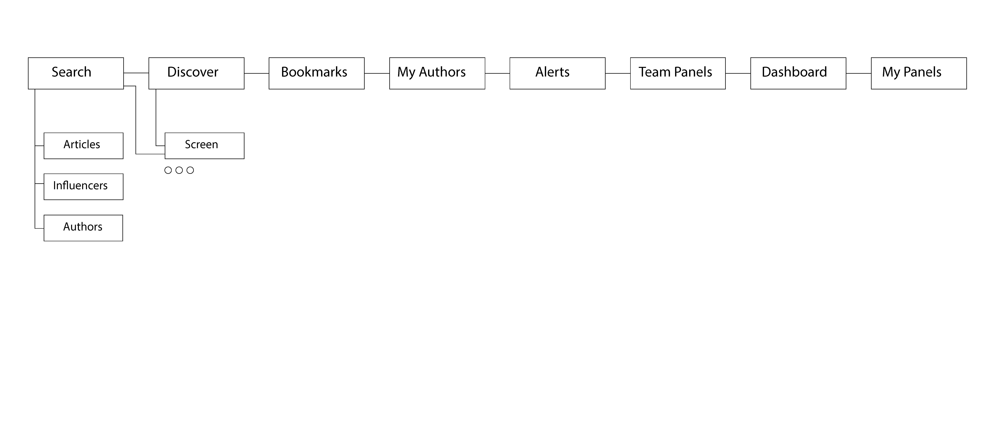
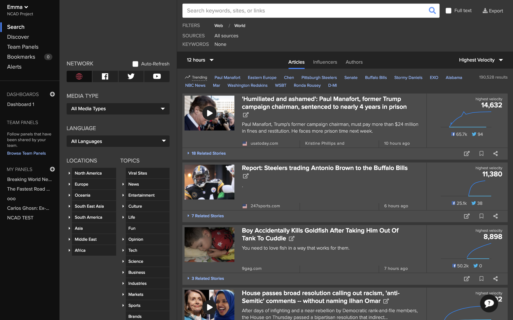

Newswhip
Interaction Design

Tools
Adobe Illustrator, Photoshop, Adobe XD, Miro
Summary
NewsWhip's growth has come from its ability to meet the needs of journalists worldwide. To continue growth, NewsWhip saw new opportunities to serve the needs of modern PR agencies.
Challenges
Over the last few years, social media data has played an increasing part in the services offered by PR agencies. NewsWhip can help them extend those services with real-time social data and their perfectly positioned platform. The challenge
was to ensure the product interfaces were competitive to the expectations of these new users.
The Solution
User Research
We conducted in-person and remote user tests of the platform for this project. Our focus was on understanding the importance of social media in their day-to-day workflow. We gathered baseline metrics such as time-on-task and numbers of clicks
during the tests to ensure users found the windows efficiently.
User Testing

3x Users
Newswhip
3x Users
Competitors
Research Synthesis
We then gathered our insights into opportunities and pain points to design a solution for users to complete their tasks more effectively. We discovered that users were taking far too long to find the spike analytics tool, which caused them
to prefer other digital platforms which catered specifically to them.

User Journey Map
We used a user journey map and personas to pinpoint the types of users we were catering towards for this tool and to help us discover experience drop-offs on the platform.

Site Map
We then created a site map to help visualise a better structure of the application. One major problem was that there were far too many clicks within the platform, and users felt like what they would use for their work was hidden deeply within
the application's windows.

Wireframes
After iterating on our design, we were able to wireframe our solution to the problems we had discovered during user testing; we then met with our users to test our ideas and tweak any issues affecting their workflow.

UI Prototype
We finally had a High-fidelity prototype we could go back to our users with for one final test before handing it off to developers to ensure that they were happy with what our team had designed.
